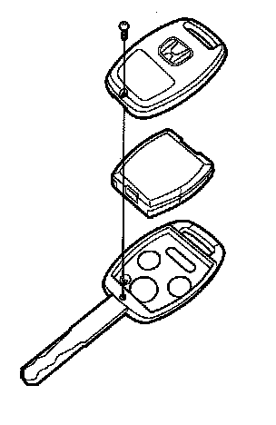
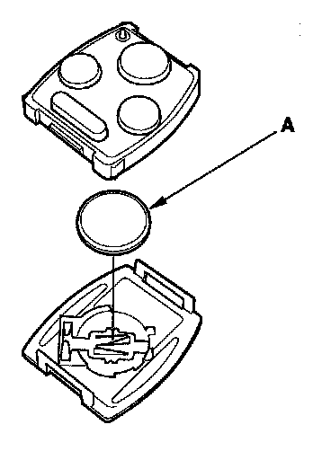
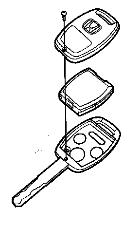
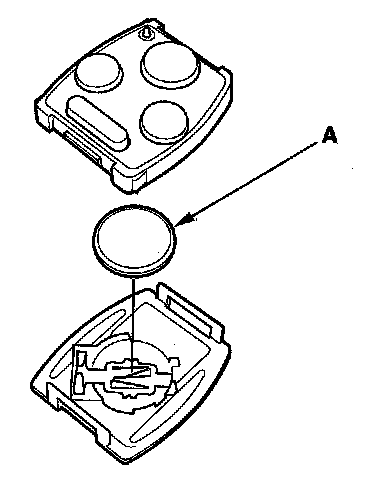

Keyless Entry Transmitter: Service and Repair
Transmitter Test/ReplacementNOTE:
- If the doors unlock or lock with the transmitter, but the LED on the transmitter does not come on, the LED is faulty; replace the transmitter.
- If any door is open, you cannot lock the doors with the transmitter.
- If you unlocked the doors with the transmitter, but do not open any of the doors within 30 seconds, the doors relock automatically.
- The doors do not lock or unlock with the transmitter if the ignition key is inserted in the ignition switch.
With HDS
1. Press the lock or unlock button five or six times to reset the transmitter.
- If the locks work, the transmitter is OK.
- If any of the transmitter buttons does not work, replace the transmitter, then do the transmitter programming register.
- If the locks don't work, go to step 2.
2. Connect the HDS to the data link connector.
3. Select the KEYLESS from the BODY ELECTRICAL menu, then enter the KEYLESS CHECK.
4. Press lock, unlock, trunk, or panic button and check the response on the screen of the HDS.
NOTE: The door lock actuators mayor may not cycle when receiving input from the transmitter.
- If KEYLESS ENTRY TRANSMITTER CODE IS RECEIVED is indicated, the transmitter is OK.
- If DIFFERENT KEYLESS ENTRY TRANSMITTER CODE IS RECEIVED is indicated, the transmitter is not registered to the vehicle, if necessary, reprogram and register the transmitter.
- If KEYLESS ENTRY TRANSMITTER CODE IS NOT RECEIVED is indicated, go to step 5.

5. Open the transmitter and check for water damage.
- If you find any water damage, replace the transmitter, then reprogram and register the transmitter.
- If there is no water damage, go to step 6.

6. Replace the transmitter battery (A) with a new one, and press lock or unlock button and check the receive condition on the screen of the HDS.
- If KEYLESS ENTRY TRANSMITTER CODE IS RECEIVED is indicated, the transmitter is OK.
- If KEYLESS ENTRY TRANSMITTER CODE IS NOT RECEIVED is indicated, go to step 7.
7. Use a different known-good keyless transmitter assembly and repeat steps 3 and 4.
NOTE: The keyless transmitter does not need to be programmed to the vehicle for this test.
- If (DIFFERENT) KEYLESS ENTRY TRANSMITTER CODE IS RECEIVED is indicated, replace the keyless transmitter and do the immobilizer system registration.
- If KEYLESS ENTRY TRANSMITTER CODE IS NOT RECEIVED is indicated, the immobilizer-keyless control unit is faulty, replace it and do the immobilizer system registration.
NOTE: As the keyless transmitter is combined with the immobilizer transponder, so when the transponder is registered by the HDS,the keyless transmitter programming is completed automatically.
Without HDS
1. Start the engine.
- If the engine does not start, go to the immobilizer system troubleshooting.
- If the engine starts, go to step 2.
2. Press the lock or unlock button five or six times reset the transmitter.
- If the locks work, the transmitter is OK.
- If the locks don't work, go to step 3.

3. Open the transmitter and check for water damage.
- If you find any water damage, replace the transmitter.
- If there is no water damage, go to step 4.

4. Replace the transmitter battery (A) with a new one, and try to lock and unlock the doors with the transmitter by pressing the lock or unlock button five or six times.
- If the doors lock and unlock, the transmitter is OK.
- If the doors don't lock and unlock, go to step 5.
5. Reprogram and register the transmitter, then try to lock and unlock the doors.
- If the doors lock and unlock, the transmitter is OK.
- If the doors don't lock and unlock, substitute a known-good transmitter and recheck. If still not operating, replace the immobilizer-keyless control unit.